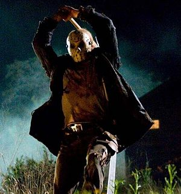
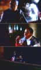
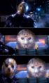

Пятница, 13-е
1980 (+десять сиквелов, кроссовер с «Кошмаром», ремейк+готовящийся сиквел к нему)

Джейсон Вурхиз вспахивает грядки

Джейсон vs. Нигра. Конец немного предсказуем

Непонимание
Молодёжная комедия о спортивных забавах с топорами. Суть такова: небольшая группа прогрессивной американской молодежи приезжает в детский лесной лагерь у Хрустального Озера, после чего планомерно вырубается маньяком-в-маске. (спойлер: Хотя в первом фильме убийцей является мамаша будущего маньяка, а в пятом все убийства совершает его косплеер.)
Омегакультовая в США и не особо популярная в этой стране серия ужастиков. Фишкой стало непомерное количество убийств хуевой тучей способов (Джейсон пользовался всем, что попадется под руку, и даже вообще самими голыми руками). Любимым же орудием маньяка является мачете.
Композитор Гарри Манфрэдини признаётся, что большинство поклонников путают культовый звук в музыкальной теме фильма «ki-ki-ki, ma-ma-ma», слыша звуки «chi-chi-chi, ha-ha-ha». По задумке создателей, это эхо самого Джейсона, повторяющей миссис Вурхиз — «убей-мамочка» («kill-kill-kill, mom-mom-mom»).
Значимость™:
- Сформировав таки к третьей части облик главного злодея, авторы сериала создали каноничный образ «маньяка из слешера»: молчаливого и просто-таки невероятно неубиваемого верзилы в маске (в оригинале,Джейсон возродившийся из утонувшего пацана мертвец).
- Окончательно оформлен типаж «тупых американских тинейджеров» и модель их поведения. Хорошим тоном при просмотре таких фильмов считается выражение лица «грёбаный стыд» и комментарии вроде «ну куда ты прешь, он же под кроватью!». А поскольку как таковой личности ни у одного из них не сформировано, то главным героям (в привычном смысле слова) сопереживать невозможно в принципе, и болеет зритель исключительно за маньяка, радостно аплодируя при каждом ++bodycount.(впрочем,на то и расчитано)
- Третья часть вышла в 3D.
- Джейсон достоин памятника, как главный охотник на быдло. Тысячи и миллионы разномастных лохов, придурков, укурков, гламурных крокодилиц и прочих объебосов были вырублены его быстрым мачете. С 8 части начал резать наркоманов и пугать гопников своим милым интерфейсом вне маски.
- Конкурирует с Фреддом Крюгером в уродливости мордяхи, ибо страдает опухолью всей головы, которая чем-то напоминает кабачок. Гидроцефалия, инфа 100%. ЧСХ, был снят кроссовер «Фредди против Джейсона», где герои сначала корешатся, а потом… ну ты понел. Тема сисек раскрыта. Также в каждой части облик без маски не Православно меняют.
- 9 и 10 часть — бред укуренного пейсателя. Трава, которую раздобыли авторы, зверски сильная, прямо-таки лютая, но, к сожалению, где они ее взяли, в титрах не сообщается (анон проверил).
- На NES выходила игрушка по сабжу, в которой можно было опиздошить Джейсона и ожившую головушку его мамаши.
- Алсо, в игре Dead Island у вас также есть возможность найти и дать пизды Вурхизу и отжать у него няшечную бензопилу.
- Mortal Kombat X же. После Фредди Крюгера фанаты стали яростно требовать гостевых персонажей из фильмов ужасов, и ВНЕЗАПНО Эд Бун включает Джейсона в список персонажей, в качестве DLC.
- В конце весны 2017го вышла игра Friday the 13th The game. Представляет собой сурвайвал, в котором тинэйджеры должны убежать из лагеря, починив машину\лодку или на своих двоих, вызвав ментов (либо, при выполнении некоторых условий, убив Джейсона), а Джейсон должен их всех выпилить.
Пятница 13-ое. Часть 1.
Оригинальное название: Friday the 13th.
Год выхода: 1980.
Жанр: Ужасы, Триллер.
Выпущено: Paramount Pictures.
Режиссер: Шон С. Каннингэм /Sean S. Cunningham/.
В ролях: Бетси Палмер /Betsy Palmer/, Кевин Бэйкон /Kevin Bacon/, Эдриенн Кинг /Adrienne King/, Хэрри Кросби /Harry Crosby/, Лори Бартрэм /Laurie Bartram/, Марк Нелсон /Mark Nelson/.
Продолжительность: 1:35.
Их предупреждали... Их прокляли... В пятницу, 13-ого... их уже ничего не спасет... Уютный лагерь "Хрустальное озеро" открывается! Вожатые ожидают летнюю смену, приготовив для юных гостей увлекательные мероприятия и забавные игры. Но заняты они больше любовью и развлечениями чем детьми. И один из отдыхающих, мальчонка по имени Джейсон тонет в озере. Но Джейсон восстает из мертвых и возвращается в лагерь чтобы начать новую игру. Игру, о которой вожатые еще не знают: она будет пользоваться большой популярностью в этом сезоне. Игра называется - "Убей вожатого!".
Пятница 13-ое. Часть 2.
Оригинальное название: Friday the 13th. Part 2.
Год выхода: 1981.
Жанр: Ужасы, Триллер.
Выпущено: Paramount Pictures.
Режиссер: Стив Майнер /Steve Miner/.
В ролях: Эми Стил /Amy Steel/, Джон Фьюри /John Furey/, Эдриенн Кинг /Adrienne King/, Керстен Бэйкер /Kirsten Baker/, Бетси Палмер /Betsy Palmer/, Стю Чарно /Stu Charno/.
Продолжительность: 1:27.
Через пять лет после трагических событий первой части, новый предприниматель решает возродить печально известный лагерь у Хрустального Озера. Всё бы ничего, да только таинственные убийства, время от времени случающиеся в окрестных лесах не дают умереть зловещей легенде о проклятии, довлеющем над Озером. На лагерь спускается ночь, а вместе с ней приходят ужас и страх. Выживет ли кто-нибудь в новой кровавой мясорубке?
Пятница 13-ое. Часть 3.
Оригинальное название: Friday the 13th. Part 3.
Год выхода: 1982.
Жанр: Ужасы, Триллер.
Выпущено: Paramount Pictures.
Режиссер: Стив Майнер /Steve Miner/.
В ролях: Дана Киммелл /Dana Kimmell/, Пол Кратка /Paul Kratka/, Ричард Брукер /Richard Brooker/, Ник Сэвэдж /Nick Savage/, Рэйчел Ховард /Rachel Howard/, Ларри Зернер /Larry Zerner/.
Продолжительность: 1:35.
Кристальное озеро впору переименовать в кровавое море! Резня продолжается. Джейсон - непобедимый, примеривший в этом фильме хоккейную маску с дырочками для облегчения дыхания, и с тех пор ее не снимающий и не предполагает что спустя каких-то 20 лет ему предстоит сражаться с Фредди Крюгером. Но сейчас это его территория. Он король, а значит ни один подросток не смеет радоваться и оголяться в районе озера без его участия!
Пятница 13-ое. Часть 4: Последняя глава.
Оригинальное название: Friday the 13th. Part 4: The Final Chapter.
Год выхода: 1984.
Жанр: Ужасы, Триллер.
Выпущено: Paramount Pictures.
Режиссер: Джозеф Зито /Joseph Zito/.
В ролях: Криспин Гловер /Crispin Glover/, Кимберли Бек /Kimberley Beck/, Барбара Хауард /Barbara Howard/, Эрих Андерсон /Erich Anderson/, Кори Фелдмэн /Corey Feldman/, Тед Уайт /Ted White/.
Продолжительность: 1:31.
На этот раз Джейсон очнулся в темном тесном холодильнике морга и это ему конечно не понравилось. А кому бы понравилось? А тем временем шестеро подростков снимают летний домик в лесу, неподалеку от печально известного озера, в котором и утонул в детстве чертенок Джейсон. Решили значит ребята погудеть, покричать, побегать от маньяка, вернувшегося с того света. Погудели, покричали. От убийцы в хоккейной маске убежали не все...
Пятница 13-ое. Часть 5: Новое начало.
Оригинальное название: Friday the 13th. Part 5: A New Beginning.
Год выхода: 1985.
Жанр: Ужасы, Триллер.
Выпущено: Paramount Pictures.
Режиссер: Дэнни Стейнманн /Danny Steinmann/.
В ролях: Джон Шепард /John Shepard/, Мелани Киннамэн /Melanie Kinnaman/, Шавар Росс /Shavar Ross/, Ричард Янг /Richard Young/, Кэрол Лакателл /Carol Locatell/, Джульетт Камминз /Juliette Cummins/
Продолжительность: 1:32.
Томми Джарвис - новичок в летнем лагере для трудных умалишенных. Потягавшись в 12-ти летнем возрасте с убийцей в маске в игру в догонялки он до сих пор не пришел в себя. Но и здесь ужас, преследующий его сквозь годы прошедшие со времени памятной ночи из четвертой части, нагнал беглеца. В лагере начинают исчезать ребята и Томми не без основания подозревает, что на том свете нет покоя Джейсону Вурхису, и все начинается заново...
Пятница 13-ое. Часть 6: Джейсон жив.
Оригинальное название: Friday the 13th. Part 6: Jason Lives.
Год выхода: 1986.
Жанр: Ужасы, Триллер.
Выпущено: Paramount Pictures.
Режиссер: Том МакЛафлин /Tom McLoughlin/.
В ролях: Том Мэтьюз /Thom Mathews/, Дженнифер Кук /Jennifer Cook/, Дэвид Кэйгэн /David Kagen/, Рене Джонс /Renee Jones/, Керри Нунэн /Kerry Noonan/, Си Джей Грэхэм /C.J. Graham/.
Продолжительность: 1:27.
Пара недоумков раскопали могилу Джейсона, потревожив и разозлив его не на шутку. Жуткий убийца вновь восстал из могилы... На счастье Джейсона летний лагерь Форест Грин вовсе не пустует. Толпы проказников-бойскаутов уже наводнили лагерные корпуса, отовсюду слышатся веселые детские крики. Начать пришлось с вожатых, которые так и норовили встать на пути у Джейсона...
Пятница 13-ое. Часть 7: Новая кровь.
Оригинальное название: Friday the 13th. Part 7: The New Blood.
Год выхода: 1988.
Жанр: Ужасы, Триллер.
Выпущено: Paramount Pictures.
Режиссер: Джон Карл Бюхлер /John Carl Buechler/.
В ролях: Кэйн Ходдер /Kane Hodder/, Лар Парк Линколн /Lar Park Lincoln/, Кевин Блэр /Kevin Blair/, Терри Кайзер /Terry Kiser/, Сьюзэн Блу /Susan Blu/, Сьюзэн Дженнифер Салливэн /Susan Jennifer Sullivan/.
Продолжительность: 1:28.
Джейсон Вурхиз - не совсем обычный убийца... На его счету сотни невинных жертв, но отправить на тот свет его самого - практически невозможно. Одному из счастливчиков удалось приковать Джейсона на дне Хрустального озера, где он и скучал в одиночестве... Тина Шеперд - не совсем обычная девушка. Она может предвидеть будущее и передвигать предметы на расстоянии. Ее непредсказуемый дар освободил Джейсона из его подводной тюрьмы, и кошмар начинается снова...
Пятница 13-ое. Часть 8: Джейсон захватывает Манхэттен.
Оригинальное название: Friday the 13th. Part 8: Jason Takes Manhattan.
Год выхода: 1989.
Жанр: Ужасы, Триллер.
Выпущено: Paramount Pictures.
Режиссер: Роб Хедден /Rob Hedden/.
В ролях: Дженсен Даггетт /Jensen Duggett/, Кэйн Ходдер /Kane Hodder/, Питер Марк Ричмэн /Peter Mark Richman/, Скотт Ривз /Scott Reeves/, Барбара Бингэм /Barbara Bingham/, В. К. Дюпре /V. C. Dupree/.
Продолжительность: 1:40.
Веселой компанией, закончив школу, девчонки и мальчишки отправились на корабле на увеселительную прогулку в Нью-Йорк. На их беду незакрепленным якорем расковыряло прикованного к своей подводной могиле Джейсона, и тот превратил их праздник в ужасный кошмар. Убив большую часть народа, он отправился за теми, кому удалось спастись на шлюпке. И вновь начинается беготня да суета, на сей раз по ночным закоулкам Нью-Йорка...
Пятница 13-ое. Часть 9: Последняя пятница.
Оригинальное название: Jason Goes to Hell: The Final Friday.
Год выхода: 1993.
Жанр: Ужасы, Триллер.
Выпущено: New Line Cinema.
Режиссер: Эдам Маркус /Adam Marcus/
В ролях: Джон Д. Ле Мэй /Jon D. Le May/, Кэри Киган /Kari Keegan/, Эллисон Смит, Стивен Калп /Steven Culp/, Билли "Грин" Буш /Billy "Green" Bush/, Эрин Грэй /Erin Gray/, Стивен Уильямс /Steven Williams/.
Продолжительность: 1:30.
Убийца-зомби Джейсон Ворхес разнесен на куски боевиками из ФБР. Используя тела своих новых жертв, он выбирается из анатомички и спешит домой, на Хрустальное озеро, чтобы вновь возродится в прежнем облике. Напряженное действие, горы трупов, моря крови - словом, все то, за что мы любим этот сериал!
Джейсон Х.
Оригинальное название: Jason X
Год выхода: 2001
Жанр: Фантастика, Боевик, Ужасы, Триллер.
Выпущено: New Line Cinema.
Режиссер: Джейсон Айзек /James Isaac /.
В ролях: Кейн Ходдер /Kane Hodder/, Лекса Дойг/ Lexa Doig/, Лиза Райдер /Lisa Ryder/, Чак Кемпбелл /Chuck Campbell/, Джонатан Поттс /Jonathan Potts/, Питер Мэнса /Peter Mensah/.
Продолжительность: 1:24.
Год 2455, Земля стала ядовитой токсичной пустынной планетой, называемой Старая Земля. Группа студентов-археологов из новой колонии Земля 2 прилетают на некогда прекрасную, а теперь заброшенную Старую Землю, исследовать древние останки прошлых цивилизаций. Находкой студентов становятся два замороженных криогенном тела, хранящиеся с 2008 года в старом исследовательском центре. Обрадованная своей находкой команда забирает найденные тела с собой. Одно из тел принадлежит серийному убийце Джейсону Вурхесу. Студенты не подозревают, с какой смертельной опасностью им предстоит столкнуться, когда Джейсон будет разморожен и начнет ходить по кораблю...